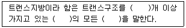

식품산업기사 (2012-03-04 기출문제)
1과목: 식품위생학
1. 진드기류의 번식 억제 방법이 아닌 것은?
- 밀봉 포장에 의한 방법
- 습도를 줄이는 방법
- 냉장하는 방법
- 30℃ 정도로 가열하는 방법
(정답률: 72%)

2. 편성 혐기성이며, 열에 가장 강한 식중독 원인균은?
- 보툴리누스균
- 살모넬라균
- 포도상구균
- 장염비브리오균
(정답률: 74%)
3. 식품의 유통기한 설정사유서를 작성시 행해야하는보존실험 내용 중 틀린 것은?
- 실온유통제품 : 실온이라 함은 1~25℃를 말하며, 원칙적으로 25℃를 포함하여 선정한다.
- 상온유통제품 : 상온이라 함은 15~25℃를 말하며,25℃를 포함하여 선정하여야 한다.
- 냉장유통제품 : 냉장이라 함은 0~10℃를 말하며, 원칙적으로 10℃를 포함한 냉장온도를 선정하여야 한다.
- 냉동유통제품 : 냉동이라 함은 -18℃ 이하를 말하며,품질변화를 최소화 될 수 있도록 냉동온도를 선정하여야 한다.
(정답률: 70%)
4. 인수공통감염병으로 동물에게는 유산, 사람에게 열병을일으키는 것은?
- 탄저
- 파상열
- 돈단독
- 큐열
(정답률: 84%)
5. 배지의 멸균방법으로 가장 적합한 것은?
- 화염멸균법
- 간헐멸균법
- 고압증기멸균법
- 열탕소독법
(정답률: 81%)
6. 식품공장에서 사용되는 용수에 대한 기본적인 처리방법에해당되지 않는 것은?
- 여과
- 경화
- 침전
- 연화
(정답률: 61%)
7. 연어나 송어를 생식함으로서 감염되는 기생충은?
- 무구조층
- 광절열두조충
- 스파르가눔증
- 선모충
(정답률: 83%)
8. 기구 및 용기·포장의 기준으로 틀린 것은?
- 물리적 또는 화학적으로 내용물이 오염되기 쉬운구조이어서는 아니된다.
- 식품과 접촉하는 기구 및 용기·포장의 제조 또는수리에 사용하는 땜납은 납을 0.1%이상 함유하여서는아니된다.
- 식품과 접촉하는 면에 인쇄를 하지 않아야 한다.
- 랩 제조 시에는 디에틸헥실아디페이트(DEHA)를 0.2ng/m2이하로 사용하여야 한다.
(정답률: 71%)
9. 포도주 양조나 전분 제조 시 살균 효과와, 건조과일 등의갈변방지 효과가 있지만 천식환자에게 그 독성이 문제될수 있는 것은?
- 사이클로덱스트린
- 벤조피렌
- 아질산염
- 아황산염
(정답률: 69%)
10. 식중독균인 장염 비브리오의 특징이 아닌 것은?
- 편모가 있다.
- 내열성이 있다.
- 아포를 형성하지 않는다.
- 무염 하에서는 생장 못한다.
(정답률: 46%)
11. 도자기 또는 항아리 등에 사용되는 유약에서 특히 문제가 되는 유해금속은?
- 철
- 구리
- 납
- 주석
(정답률: 83%)
12. 식품 중의 디메틸아민(dimethylamine)과 반응하여 발암성이 강한 니트로사민(nitrosamine)을 만드는 물질은?
- 인산염
- 암모늄염
- 아질산염
- 칼슘염
(정답률: 76%)
13. 식품의 저장 및 발효과정에서 자연 발생되는 독성물질로 알코올 음료와 발효식품에 함유된 발암물질은?
- 에틸 카바메이트(ethyl carbamete)
- 바이오제닉 아민(biogenic amines)
- 니트로퓨란(nitrofurans)
- 벤젠(benzene)
(정답률: 72%)
14. 다음 중 허용된 감미료가 아닌 것은?
- 삭카린나트륨(sodium saccharin)
- 아스파탐(aspartame)
- D-솔비톨(D-sorbitol)
- 둘신(dulcin)
(정답률: 77%)
15. 식품위생검사기관에 대한 설명 중 틀린 것은?
- 식품의약품안전청장이 지정하는 식품위생검사기관은 식품위생전문검사기관과 자가품질위탁검사기관으로 구분된다.
- 식품위생검사기관의 지정에 관한 유효기간은 지정받은날로부터 3년으로 하며, 1년을 초과하지 않는 범위에서1회에 한해 그 기간을 연장할 수 있다.
- 식품위생검사기관은 고의 또는 중대한 과실로 거짓의식품위생검사 성적서를 발급한 경우 지정이 취소된다.
- 식품위생검사기관 중 자가품질위탁검사기관은 수입식품, 건강기능식품을 포함한 식품에 대한 검사를실시할 수 있다.
(정답률: 66%)
16. 다음 중 영양표기 대상 식품이 아닌 것은?
- 즉석 면류
- 쨈류
- 특수용도식품
- 식용 유지류
(정답률: 61%)
17. 식품 등의 표시기준에서 트랜스지방의 정의에 대한 설명이다. ( )안에 들어갈 용어를 순서대로 나열한 것은?

- 2-공액형-포화지방산
- 1-공액형-불포화지방산
- 2-공액형-불포화지방산
- 1-비공액형-불포화지방산
(정답률: 77%)
18. 식품과 유해성분의 연결이 틀린 것은?
- 독미나리 - 시큐톡신(cicutoxin)
- 황변미 - 시트리닌(citrinin)
- 피마자유 - 고시폴(gossypol)
- 독버섯 - 콜린(choline)
(정답률: 75%)
19. 산분해간장 제조 시 생성되는 유해물질은?
- MCPD
- Dioxin
- DHEA
- DEHP
(정답률: 77%)
20. 수돗물의 염소 소독 중 염소와 미량의 유기물질과의 반응으로 생성될 수 있는 발암성 물질은?
- benzopyrene
- nitrosoamine
- halazone
- trihalomethane
(정답률: 59%)
2과목: 식품화학
21. 소와 연체동물의 혈색소에 내포된 금속의 연결이 옳은 것은?
- 소 : hemoglobin - Cu, 연체동물 : hemocyanin - Fe
- 소 : hemoglobin - Fe, 연체동물 : hemocyanin - Cu
- 소 : hemocyanin - Fe, 연체동물 : hemoglobin - Cu
- 소 : hemocyanin - Cu, 연체동물 : hemoglobin - Fe
(정답률: 76%)
22. 어류의 대표적인 비린내 성분과 거리가 먼 것은?
- iodine
- trimethylamine
- dimethylamine
- piperidine
(정답률: 60%)
23. 다음 중 오이의 주된 향기성분은?
- sedanolide
- 2, 6-nonadienol
- limonene
- methyl mercaptane
(정답률: 63%)
24. 다음 중 탄수화물에 존재하지 않는 것은?
- 알데하이드(aldehyde)
- 하이드록실(hydroxyl)
- 아민(amine)
- 케톤(ketone)
(정답률: 69%)
25. 펙틴(pectin)질 중 분자량이 가장 큰 것은?
- pectinic acid
- protopectin
- pectic acid
- pectin
(정답률: 70%)
26. 아미노산인 트립토판을 전구체로 하여 만들어지는 수용성비타민은?
- 비오틴(biotin)
- 엽산(folic acid)
- 나이아신(niacin)
- 리보플라빈(riboflavin)
(정답률: 65%)
27. 생고기를 숯불로 구울 때 생성될 수 있는 유해성분은?
- 니트로사민
- 다환방향족탄화수소
- 아플라톡신
- 테트로도톡신
(정답률: 86%)
28. 식품이나 기타 생물계에서 지질의 산화를 평가하는데 많이 사용되는 방법 중 하나로 시료 kg당 말론알데하이드(malonaldehyde)의 mole로 나타내는 방법은?
- 과산화물가(peroxide value)
- TBA가(thiobarbituric acid value)
- 카르보닐가(carbonyl value)
- 공액 이중산가(conjugated dienes value)
(정답률: 54%)
29. 관능검사에서 신제품이나 품질이 개선된 제품의 특성을 묘사하는데 참여하며 보통 고도의 훈련과 전문성을 겸비한 요원으로 구성된 패널은?
- 차이식별 패널
- 특성묘사 패널
- 기호조사 패널
- 전문 패널
(정답률: 70%)
30. 단백질 중의 질소의 평균 함량은?
- 6%
- 10%
- 16%
- 20%
(정답률: 80%)
31. 닌히드린 반응(ninhydrin reaction)이 이용되는 것은?
- 아미노산의 정성
- 지방질의 정성
- 탄수화물의 정성
- 비타민의 정성
(정답률: 84%)
32. 식용유지의 품질을 평가하는데 가장 중요한 사항은?
- glyceride의 양
- 유리지방산 함량
- lipase 함량
- 색소
(정답률: 80%)
33. 셀룰로오스(cellulose)에 관한 설명 중 틀린 것은?
- 식물세포벽의 주성분이다.
- 나선구조를 하며 α-1, 4 glucose결합이다.
- 식품중의 섬유소는 거의 소화되지 않으나 장(intestine)운동을 촉진한다.
- 물에 녹지 않는다.
(정답률: 59%)
34. 배추김치에서 배추의 녹색이 갈색으로 변화되는 이유는 엽록소의 Mg이 어떤 성분으로 치환되었기 때문인가?
- Fe2+
- Cu2+
- H+
- 0H-
(정답률: 62%)
35. 유지의 굴절률은 불포화도가 커질수록 일반적으로 어떻게 변하는가?
- 변화없다.
- 작아진다.
- 커진다.
- 굴절되지 않는다.
(정답률: 73%)
36. 단순 단백질의 구조와 관계없는 결합은?
- 수소결합
- 글리코사이드(clycoside) 결합
- 펩티드(peptide)결합
- 소수성 결합
(정답률: 58%)
37. 레올로지(rheology) 특성 중 탄성의 의미는?
- 유체의 흐름에 대한 저항성을 나타내는 성질
- 물질이 실처럼 따라올라 오는 성질
- 막대기 혹은 긴 끈 모양으로 늘어나는 성질
- 회부의 힘에 의해 변형된 물체가 원상태로 되돌아 가려는 성질
(정답률: 75%)
38. 안토시아니(anthocyanin) 색소를 함유하는 과실 제품의 붉은색을 보존하려면 어떤 조건이 가장 효과적인가?
- 산을 가한다.
- 중조를 가한다.
- 철염을 가한다.
- 수산화나트륨을 가한다.
(정답률: 66%)
39. α-전분에 대한 설명 중 틀린 것은?
- α-전분은 불규칙적인 분자배열을 갖는 무정형상태의 것이다.
- α-화는 생전분이 호화되어 α-전분으로 변화되는 현상이다.
- α-전분은 효소작용을 받기 쉬우므로 소화되기 쉽다.
- α-전분의 X-선 회절도는 B도형 나타낸다.
(정답률: 54%)
40. 포도당(glucose)이 환원되어 생성된 당알코올은?
- 솔비톨(sorbitol)
- 만니톨(mannitol)
- 이노시톨(inositol)
- 덜시톨(dulcitol)
(정답률: 73%)
3과목: 식품가공학
41. 생우유를 원심분리하고 크림 층을 제거하여 만든 제품은?
- 탈지유
- 전지유
- 발효유
- 농축유
(정답률: 79%)
42. 우유의 살균법에 대한 내용으로 적합하지 않은 것은?
- 저온살균법 : 62~65℃, 30분간
- 고온순간살균법 : 72~75℃, 15초간
- 고온감압살균법 : 92~102℃, 10초간
- 초고온순간살균법 : 135~140℃, 2~5초간
(정답률: 63%)
43. 토마토 가공에 대한 설명으로 틀린 것은?
- 토마토의 색소는 적색을 나타내는 리코펜(lycopene)과 황색을 나타내는 카로틴(carotene)이 중요한 색소이다.
- 토마토의 껍질과 씨를 제거한 과육과 즙액인 토마토펄프를 농축한 것을 토마토 퓨레(puree)라 한다.
- 토마토 펄프의 농축은 가급적 고온에서 단시간 내에 해야 한다.
- 토마토 케첩을 닫은 용기는 유리나 플라스틱으로 만든 것이 좋다.
(정답률: 69%)
44. 식품 등의 표시기준에 의거 제조일과 제조시간을 함께 표시하여야 하는 품목은?
- 어육연제품
- 식용유지류
- 도시락
- 통·병조림
(정답률: 83%)
45. 고형분 함량이 50%인 식품 5kg을 농축하여 고형분 함량 80%로 만들려고 한다. 제거해야 할 물의 양은?
- 1.325kg
- 1.5⑤kg
- 1.625kg
- 1.875kg
(정답률: 37%)
46. 변조방지용 포장방법과 거리가 먼 것은?
- 블리스터(blister) 포장
- 수축포장(shrink wrapping)
- 백 인 박스(bag in box) 포장
- 파괴성 뚜껑(cap)
(정답률: 61%)
47. 고추장 제조공정에서 코오지(koji)를 넣고 전분을 당화할 때 온도가 낮아지면 어떤 현상이 발생하는가?
- 효모의 번식으로 알코올 맛이 난다.
- 고초균의 번식으로 매운맛이 난다.
- 젖산균의 번식으로 신맛이 난다.
- 부패세균의 번식으로 부패취가 난다.
(정답률: 64%)
48. 육제품의 주요 훈연목적과 거리가 먼 것은?
- 저장성 증진
- 산화 방지
- 풍미 증진
- 영양 증진
(정답률: 85%)
49. 식물성 유지가 동물성 유지보다 산패가 덜 일어나는 이유는?
- 천연항산화제가 들어있기 때문에
- 발연점이 낮기 때문에
- 시너지스트(synergist)가 없기 때문에
- 열에 안정하기 때문에
(정답률: 80%)
50. 건조 가공품과 적합한 건조기의 연결이 틀린 것은?
- 건조 쇠고기 - 동결 건조기
- 분말 커피 - 분무 건조기
- 건조 달걀 - 드럼 건조기
- 건조 쥐치포 - 터널 건조기
(정답률: 68%)
51. 된장의 고유 냄새는 주로 어떤 성분의 조화로 만들어지는가?
- 알코올과 유기산의 조화
- 알코올과 당분의 조화
- 당분과 아미노산의 조화
- 당분과 유기산이 조화
(정답률: 44%)
52. 쌀을 장기저장 하고자 할 때 가장 적당한 수분 함량은?
- 15~20%
- 10~15%
- 5~10%
- 0~5%
(정답률: 64%)
53. 과채류의 장기저장을 위한 일반적인 공기조성 조건은?
- O2 농도 높게 - CO2 농도 높게
- O2 농도 낮게 - CO2 농도 낮게
- O2 농도 낮게 - CO2 농도 높게
- O2 농도 높게 - CO2 농도 낮게
(정답률: 73%)
54. 식물 유지의 채유법 중 추출법에 사용하는 용제의 구비조건으로 틀린 것은?
- 유지는 잘 추출되나 유지 이외의 물질은 잘 녹지 않을 것
- 유지 및 착유박에 나쁜 냄새를 남기지 않을 것
- 기화열 및 비열이 커서 회수하기 쉬울 것
- 인화 및 폭발의 위험성이 적을 것
(정답률: 73%)
55. 난황계수가 0.40이고, 난황의 폭이 3cm 일 때, 난황의 높이와 달걀의 상태는?
- 높이 0.12cm이고, 부패란이다.
- 높이 0.12cm이고, 신선란이다.
- 높이 1.2cm이고, 부패란이다.
- 높이 1.2cm이고, 신선란이다.
(정답률: 73%)
56. 포도 주스 가공과 관계없는 단위 조작은?
- 파쇄
- 가열
- 증류
- 여과
(정답률: 58%)
57. 코오지(koji)를 사용하는 가장 주된 목적은?
- 호기성균을 발육시켜 호흡작용을 정지시키기 위해
- 아미노산, 에스테르 등의 물질을 얻기 위해
- 아밀라아제, 프로테아제 등의 효소를 생성하기 위해
- 잡균의 번식을 방지하기 위해
(정답률: 75%)
58. 산을 첨가했을 때 응고·침전하는 우유 단백질로써 유화제로 사용되는 것은?
- 레닌
- 글로불린
- 카제인
- 알부민
(정답률: 75%)
59. 동물 사후경직 단계에서 일어나는 근수축 결과로 생긴 단백질은?
- 미오신(miosin)
- 트로포미오신(tropomyosin)
- 액토미오신(actomyosin)
- 트로포닌(troponin)
(정답률: 72%)
60. 수확하여 추숙하는 과정 중 호흡작용이 높아지는 호흡상승(climacteric rise) 현상이 나타나지 않는 과채류는?
- 사과
- 포도
- 바나나
- 토마토
(정답률: 57%)
4과목: 식품미생물학
61. 유리 산소의 유무에 상관없이 생육할 수 있는 균은?
- 편성호기성균
- 편성혐기성균
- 통성혐기성균
- 미호기성균
(정답률: 70%)
62. 효모에 의한 ethyl alcohol 발효는 어느 대사 경로를 거치는가?
- EMP
- TCA
- HMP
- ED
(정답률: 70%)
63. 아미노산 발효법이 아닌 것은?
- 야생균주에 의한 발효법
- 영양요구성 변이주에 의한 발효법
- Analog 내성 변이주에 의한 발효법
- Orleans 정치 발효법
(정답률: 54%)
64. 원핵세포의 구조와 기능이 잘못 연결된 것은?
- 세포벽 - 세포의 기계적 보호
- 염색체 - 단백질의 합성 장소
- 편모 - 운동력
- 세포막 - 투과 및 수송능
(정답률: 76%)
65. Bacillus 속에 대한 설명으로 틀린 것은?
- 그람 양성균이다.
- 호기성 또는 통성혐기성이다.
- 토양에서만 존재하고 수중에는 존재하지 않는다.
- 전형적으로 카탈라아제 양성이다.
(정답률: 67%)
66. 빵의 rope 발생 원인이 되는 미생물은?
- Serratia marcescens
- Penicillium expansum
- Bacillus licheniformis
- Lactobacillus lactis
(정답률: 45%)
67. 효소에 대한 설명 중 틀린 것은?
- 효소는 특정물질에만 작용하는 기질특이성이 있다.
- 효소의 작용은 pH에 크게 영향을 받는다.
- 온도가 높아질수록 효소활성도는 계속 커진다.
- 유기화합물의 반응에서 촉매역할을 한다.
(정답률: 66%)
68. 분열법으로 증식하는 효모는?
- Schizosaccharomyces 속
- Saccharomyces 속
- Zygosaccharomyces 속
- Debaryomyces 속
(정답률: 49%)
69. 밥, 빵 등을 부패시키고 강력한 아밀라아제, 프로테아제를 분비하여 통성 혐기성으로 내열성 포자를 생성하는 균은?
- Escherichia coli
- Lactobacillus plantarum
- Bacillus subtilis
- Clostridium botulinum
(정답률: 63%)
70. 분홍색 색소를 생성하는 누룩곰팡이로 홍주의 발효에 이용되는 것은?
- Monascus purpureus
- Neurospora sitophila
- Rhizopus javanicus
- Botrytis cinerea
(정답률: 62%)
71. Penicillium속과 Aspergillus속의 다른 점은?
- 분생자
- 경자
- 병족세포
- 균사
(정답률: 64%)
72. 탄소원으로 1kg의 에틸알코올을 배지로 하여 초산발효 하였을 때 얻어지는 초산의 이론적인 최대 생성량은 약 얼마인가?
- 667g
- 874g
- 1304g
- 1517g
(정답률: 53%)
73. 맥주에 불쾌한 냄새를 나타내는 효모는?
- Saccharomyces pastorianus
- Saccharomyces coreanus
- Schizosaccharomyces pombe
- schizosaccharomyces mallacei
(정답률: 42%)
74. 미생물 대사 중 pyruvic acid가 TCA cycle로 들어갈 때 어떤 형태로 전환되는가?
- acetyl CoA
- NADP
- FAD
- ATP
(정답률: 78%)
75. 곰팡이의 일반적인 증식방법은?
- 출아법
- 동태접합법
- 분영법
- 무성포자 형성법
(정답률: 55%)
76. 김치 숙성에 주로 관계되는 균은?
- 고초균
- 대장균
- 젖산균
- 황국균
(정답률: 83%)
77. 조류에 관한 설명 중 틀린 것은?
- 광합성 작용을 한다.
- 해조와 담수조가 있다.
- 색소 및 저장물질의 종류 등으로 분류한다.
- 동물성 플랑크톤이다.
(정답률: 68%)
78. 세균 세포벽의 역할이 아닌 것은?
- 세포 내부의 높은 삼투압으로부터 세포를 보호한다.
- 세포 고유의 형태를 유지하게 한다.
- 전자전달계가 있어서 산화적 인산화반응을 일으킬수 있다.
- 세포벽 성분에 의해 세균독성이 나타나기도 한다.
(정답률: 64%)
79. 산막효모의 특징이 아닌 것은?
- 액 표면에 피막을 형성한다.
- 위균사나 진균사를 형성한다.
- 양조 과정 중에 알코올을 생성한다.
- Hansenula속이 해당된다.
(정답률: 47%)
80. 청국장의 발효균은?
- Aspergillus oryzae
- Bacillus natto
- Rhizopus delemar
- Zygosaccharomyces rouxii
(정답률: 81%)
5과목: 식품제조공정
81. 다음 중 기체 이송기에 해당되는 장치는?
- 압축기
- 호이스트
- 원심 펌프
- 벨트 컨베이어
(정답률: 42%)
82. 막분리의 특징이 아닌 것은?
- 상의 변화가 있기 때문에 에너지가 절약된다.
- 가열을 하지 않기 때문에 향기 성분의 손실을 방지할수 있다.
- 대량의 냉각수가 필요없다.
- 분획과 정제를 동시에 행할 수 있다.
(정답률: 48%)
83. 타원형의 용기에 물에 반쯤 채우고 임펠라를 회전시켜일정 위치에서 기체가 압축 이송되는 장치는?
- 로타리 블로워
- 압축기
- 매시 펌프
- 팬
(정답률: 59%)
84. 식품원료를 무게, 크기, 모양, 색깔 등 여러 가지 물리적성질의 차이를 이용하여 분리하는 조작은?
- 선별
- 교반
- 교질
- 추출
(정답률: 84%)
85. 설비비가 비싸고, 처리량이 적어 점도가 높은 최종단계의 농축에 많이 사용하는 증발기는?
- 긴 관형 증발기
- 코일 및 재켓식 증발기
- 기계 박막식 증발기
- 플레이트식 증발기
(정답률: 61%)
86. 흡출, 송출밸브가 설치된 실린더 속을 피스톤이 왕복하여 액체를 이송시키는 펌프가 아닌 것은?
- 워싱 펌프(washing pump)
- 프런저 펌프(plunger pump)
- 메터링 펌프(metering pump)
- 스크류 펌프(screw pump)
(정답률: 69%)
87. 물은 통과하지만 소금은 통과하지 않는 정밀한 아세트산셀룰로오스, 폴리설폰 등으로 바닷물을 밀어내어 소금은남기고, 물만 통과시키는 막분리 여과는?
- 한외 여과법
- 역삼투법
- 투석법
- 정밀 여과법
(정답률: 75%)
88. 식품의 동결법이 아닌 것은?
- 액체산소에 의한 동결법
- 공기 동결법
- 송풍 동결법
- 침지 동결법
(정답률: 44%)
89. 다음 세척방법 중 배추의 잎과 잎 사이에 끼어있는 모래를 제거하는데 가장 효과적인 것은?
- 부유세척
- 초음파세척
- 분무세척
- 공기세척
(정답률: 66%)
90. 수분함량 12%인 옥수수가루를 사용하여 압출성형 스낵을 제조하고자 한다. 옥수수가루를 압출성형기에 투입하기 전에 수분함량을 18%로 맞추어야 한다면 옥수수가루 10kg 당 가해야 하는 물의 양은 얼마인가?
- 0.37kg
- 0.73kg
- 1.11kg
- 1.48kg
(정답률: 56%)
91. 원료 중의 유용한 성분을 추출하고자 할 때 용매가 갖추어야 할 조건이 아닌 것은?
- 가격이 싸고 회수가 쉬어야 한다.
- 화학적으로 안정하며, 인화성이 낮아야 한다.
- 가급적 원하는 용질만을 선택적으로 용애해야 한다.
- 비열 및 증발열이 커야 하고, 끓는점의 범위가 넓어야한다.
(정답률: 72%)
92. 다음 용매 중 식품종실의 기름을 추출하는 데 사용하지 않는 것은?
- ethyl alcohol
- hexane
- cylcohexane
- heptane
(정답률: 55%)
93. 식품의 살균을 목적으로 하는 비가열 처리법에 해당되지 않는 것은?
- 간헐 살균
- 방사선 살균
- 자외선 살균
- 초고압 살균
(정답률: 60%)
94. 식품성분의 초임계유체추출에 주로 사용되는 물질은?
- 질소가스
- 메탄가스
- 암모니아가스
- 탄산가스
(정답률: 57%)
95. 우유로부터 크림을 분리하는 공정에서 많이 적용되고 있는 원심분리기는?
- 노즐 배출형 원심분리기(nozzle discharge centrifuge)
- 원판형 원심분리기(disc bowl centrifuge)
- 디켄터형 원심분리기(decanter centrifuge)
- 가압 여과기(filter press)
(정답률: 66%)
96. 밀에 섞여있는 보리를 제거 할 때 적합한 선별기준과거리가 먼 것은?
- 무게
- 크기
- 모양
- 광학
(정답률: 51%)
97. 표준체의 단위인 메쉬(mesh)의 정의로 옳은 것은?
- 체망 길이 1 cm 안에 들어 있는 체눈의 수
- 체망 길이 10 cm 안에 들어 있는 체눈의 수
- 체망 길이 1 inch 안에 들어 있는 체눈의 수
- 체망 길이 10 inch 안에 들어 있는 체눈의 수
(정답률: 74%)
98. 다음 중 효과적인 액체 혼합에 바람직하지 않은 것은?
- 장애판
- 원심력
- 상승류
- 와류
(정답률: 58%)
99. 파쇄형 조립기 중 피츠밀(Fitz mill)의 용도로 가장 적합한 것은?
- 분말 원료와 액체를 혼합시켜 과립을 만든다.
- 단단한 원료를 일정한 크기나 모양으로 파쇄시켜 과립을 만든다.
- 혼합이나 반죽된 원료를 스크루를 통해 압출시켜 과립을 만든다.
- 분말 원료를 고속 회전시켜 콜로이드 입자로 분산시켜 과립을 만든다.
(정답률: 76%)
100. 식품재료들이 서로 부딪히거나 식품재료와 세척기의 움직임에 의해 생기는 부딪히는 힘으로 오염물질을 제거하는 세척방법은?
- 마찰 세척
- 흡인 세척
- 자석 세척
- 정전기 세척
(정답률: 87%)